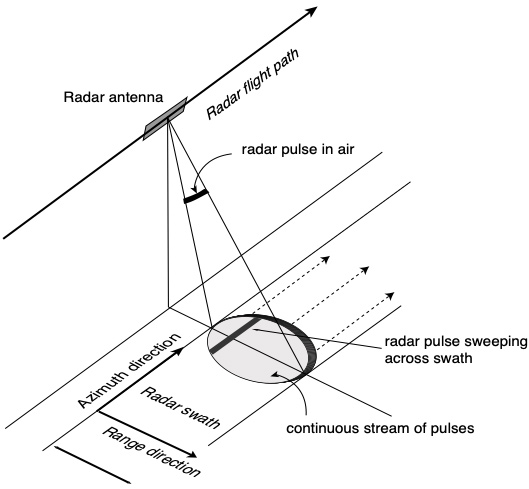
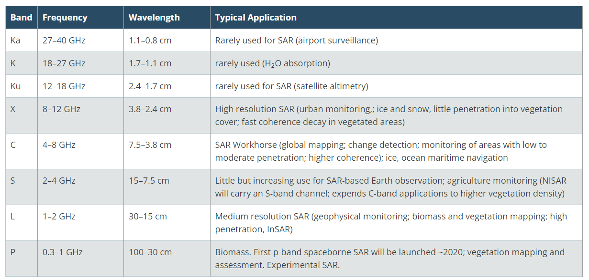
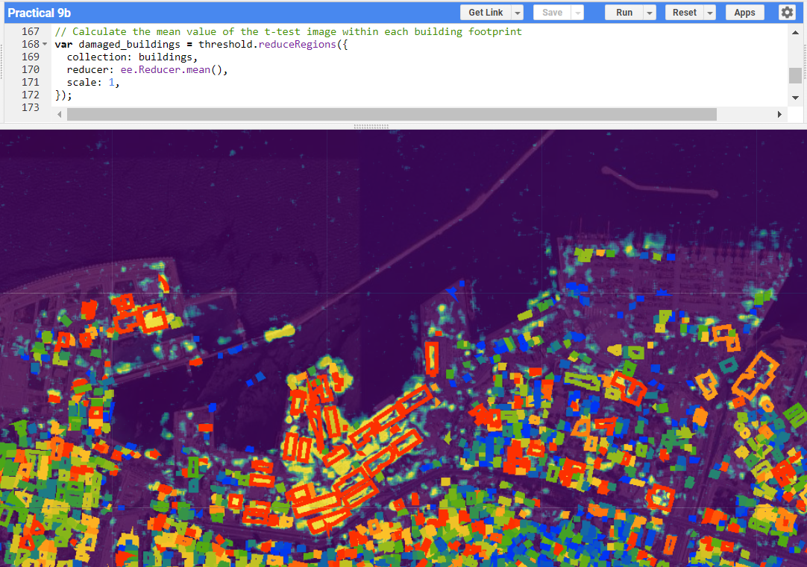
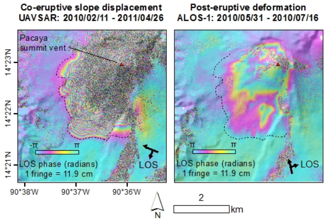

8 Synthetic Aperture Radar (SAR)
In the final week of content, we covered Synthetic Aperture Radar (SAR) fundamentals such as polarisation, amplitutde, phase, Interferometric Synthetic Aperture Radar (InSAR) and Differential Interferometric Synthetic Aperture Radar (DInSAR). We also covered change detection and the use of t-test to observe if such changes are significant.
8.1 Summary
There are two types of sensors: passive and active (GIS Geography 2015). Passive sensors measure electromagnetic radiation from the sun that is reflected by the earth. Passive sensors are present on Landsat and MODIS satellites. On the other hand, active sensors have their own energy source where they actively emit a pulse and measure the signal that is reflected from the earth. An example of an active sensor is Synthetic Aperture Radar (SAR).
SAR obtains its name from combining a sequence of images from a shorter antenna to provide an image with higher spatial resolution (NASA 2020a). The spatial resolution of data is dependent on the ratio of the sensor wavelength to the length of the sensor’s antenna (ibid). However, it is unfeasible to have a long antenna in space, thus leading to the above solution to ‘synthesize’ a long antenna.
The radar is continuously in motion and covers an area on the ground based on the wavelength and antenna dimensions. A continuous stream of pulse is sent to the ground and reported back such that any point on the ground is sampled numerous times. Source: California Institute of Technology (n.d.)
The different wavelength for SAR determines its interaction with the earth’s surface and its capability to penetrate into a medium. An X-band with a shorter wavelength is unlikely to penetrate through thick vegetation and hence mainly interacts with the tree canopy whereas an L band is able to penetrate through and allow for backscattering from the branches and trunks below. A summary of the bands, wavelengths and applications of SAR are as follow:

Summary of bands, wavelengths and applications of SAR. Source: NASA (2020a)
Besides wavelengths, another consideration is polarisation which refers to “the orientation of the plane in which the transmitted electromagnetic wave oscillates” (NASA 2020a). SAR sensors can transmit signals in the horizontal (H) or vertical (V) polarisation and likewise receive them in either the horizontal (H) or vertical (V). As different surfaces are more sensitive or respond differently to the polarisations (VV, VH, HV, HH), analysing the signal strength in these polarisations can provide insight into the structure of the observed surface.

Visualisation showing types of scattering for different features. Source: NASA (2020a)
Referring to the image above
- Strong scattering in the VV polarisation indicates a predominance of rough scattering. This suggests the presence of surfaces with coarse textures such as bare earth and rough water surfaces.
- Strong scattering in the VH or HV polarisation (i.e. cross polarisation) indicates sensitivity to volume scattering. This implies the dominance of volumetric features such as dense vegetation, in particular leaves and branches.
- Strong scattering in the HH polarisation, signifies a tendency towards double bounce scattering. This indicates the presence of features that cause a double bounce effect, such as buildings, tree trunks and calm water surfaces.
The interpretation of SAR images is not the most straightforward. The Alaska Satellite Facility conceptualised some rule of thumb on interpreting different features. For more information, read Alaska Satellite Facility (2019b).
8.2 Application
This week’s tutorial was one of my favourite which used SAR to perform a change detection of the Beirut port explosion in 2020 using Sentinel 1 image. SAR is useful for such tasks as it is able to detect subtle changes in amplitude and phase of radar wave reflection due to building damages, which are not easily observable in visible light imagery (NASA 2020b).
The image needs to be filtered for its ascending and descending orbit, as the satellite views the earth’s surface from different angles. The t-test can then be calculated for each orbit to examine if the change observed is statistically significant before the results are combined into a single image. The t-test involves comparing images in the year before the explosion to establish a baseline and images two months after the explosion to capture the explosion effects, while excluding reconstruction efforts. Validation using building footprint data was then performed to check if the extent of the damage was accurately predicted. The end result shows the number of damaged buildings was 9256, which was close to UN’s estimate of 10000 buildings. An explanation for this underestimation is that the satellite image provides a top-down point of view of the buildings. However, some buildings could still be standing with their roof intact, yet receive damage at the sides which are not captured by the satellite.

Damage assessment of Beirut after the 2020 port explosion (Red=high damage, Yellow/Orange=medium damage, Green=low damage, Blue=no damage). Source: Author’s own
Another use of SAR is for oil spill detection (Chen et al. 2017). SAR is suitable for this task due to its wide coverage and all-weather conditions. Earlier studies focused on using single polarimetric SAR images, where oil slicks appear as dark areas due to the suppression of Bragg scattering from the ocean surface. However, distinguishing oil spills from other phenomena like biogenic slicks posed challenges. Various studies proposed other polarimetric features to classify oil spills such as standard deviation of copolarised phase difference, pedestrial height and copolarisation ratio. Chen et al. (2017) applied deep learning algorithms to optimise polarimetric feature sets for oil spill detection based on the 2011 Norwegian oil-on-water exercise. Their approach outperformed other methods such as support vector machine and artificial neural networks in distinguishing between different types of slicks. Overall, this study shows that SAR can be useful for obtaining more information about different surfaces and distinguish them based on their properties, along with the integration of machine learning to improve classification problems.
Interferometric Synthetic Aperture Radar (InSAR) is an extension of SAR which combines multiple SAR images acquired from slightly different positions and times to create interferograms (USGS, n.d.). It can be used to study ground deformation such as at volcanic areas (Schaefer, Lu, and Oommen 2016). InSAR offers advantages over field monitoring, such as lower cost, lower risk and the ability to detect subtle ground deformation near volcanic areas that may not be easily observable. It also boasts high spatial resolution and continuous monitoring capabilities. By utilising InSAR for post-eruption of Pacaya volcano in Guatemala in 2010, subsidence and deformation can be detected. This information can contribute to understanding the stability of the volcano and aid in hazard assessment. UASVAR and ALOS-1 were used as complementary datasets to analyse activities before the eruptions, their evolution and the impact on the surrounding terrain. Beyond volcanic monitoring, in the field of earth observation and geoscience, InSAR can be used to study earthquakes and glaciers using similar methodologies. which follow the same methodology.

Displacement and deformation at Pacaya post-2010 eruption indicated by the negative values. Source: Schaefer, Lu, and Oommen (2016)
There are just so many applications of SAR. The Alaska Satellite Facility (2019a) has compiled the following map which shows the different uses of SAR around the world.
8.3 Reflection
SAR was quite an interesting topic to read about as compared to other satellites. There were more considerations such as polarisation, or whether the satellite was on an ascending or descending orbits. I was also fascinated by the various uses cases of SAR such as land subsidence, damage assessment, and its applications in archaeology. This made me wonder, given SAR’s valuable information and advantages, why is it avoided at times or considered disadvantageous?
From the practical and through other readings, SAR images generally require more processing, for example, considering polarisation and the orbit direction. They cannot be visually interpreted easily like an image and may suffer from information loss due to shadow (Um 2021). Additionally, SAR cannot be used to calculate various spectral indices directly, such as NDVI, as it operates in the microwave portion of the electromagnetic spectrum and measures backscatter to the Earth. In other words, it cannot capture the spectral properties of various materials (Mazza et al. 2018).
This reflection marks the end of the course. I think I come a long way in learning about remote sensing back in 2018 in my penultimate year of undergraduate, where I was exposed to ENVI and ArcGIS and limited to the lab computers. It is amazing how I was able to run all the practical from the past weeks on my personal device and that data is more accessible. The range of techniques and topics covered in this course was broader, encompassing classification, change detection, machine learning and different satellites. Remote sensing is a really exciting field and I hope to apply it to more projects in the future.
Also special shout-outs to my profs for their amazing lectures and practicals. Their resources can be found at MacLachlan (2024) and Ballinger (2024).
Alaska Satellite Facility. 2019a. “What Is SAR?” https://asf.alaska.edu/information/sar-information/what-is-sar/.
———. 2019b. “How Do i Interpret SAR Images?” https://asf.alaska.edu/information/sar-information/how-do-i-read-sar-images/.
Ballinger, Ollie. 2024. “CASA0025: Building Spatial Applications with Big Data.” https://oballinger.github.io/CASA0025/.
California Institute of Technology. n.d. “Overview | Get to Know SAR.” https://nisar.jpl.nasa.gov/mission/get-to-know-sar/overview.
Chen, Guandong, Yu Li, Guangmin Sun, and Yuanzhi Zhang. 2017. “Application of Deep Networks to Oil Spill Detection Using Polarimetric Synthetic Aperture Radar Images.” Applied Sciences 7 (10): 968. https://doi.org/10.3390/app7100968.
GIS Geography. 2015. “Passive Vs Active Sensors in Remote Sensing.” https://gisgeography.com/passive-active-sensors-remote-sensing/.
MacLachlan, Andy. 2024. “CASA0023 Remotely Sensing Cities and Environments.” https://andrewmaclachlan.github.io/CASA0023/.
Mazza, Antonio, Massimiliano Gargiulo, Giuseppe Scarpa, and Raffaele Gaetano. 2018. “Estimating the NDVI from SAR by Convolutional Neural Networks.” In, 1954–57. https://doi.org/10.1109/IGARSS.2018.8519459.
NASA. 2020a. “What Is Synthetic Aperture Radar? | Earthdata.” https://www.earthdata.nasa.gov/learn/backgrounders/what-is-sar.
———. 2020b. “Scientists Map Beirut Blast Damage.” https://earthobservatory.nasa.gov/images/147098/scientists-map-beirut-blast-damage.
Schaefer, Lauren N., Zhong Lu, and Thomas Oommen. 2016. “Post-Eruption Deformation Processes Measured Using ALOS-1 and UAVSAR InSAR at Pacaya Volcano, Guatemala.” Remote Sensing 8 (1): 73. https://doi.org/10.3390/rs8010073.
Um, Albert. 2021. “Introduction to Sentinel 1: SAR (Synthetic-Aperture Radar) Data.” https://albertum.medium.com/introduction-to-sentinel-1-sar-synthetic-aperture-radar-data-2cca22cb35a6.
USGS. n.d. “InSARsatellite-Based Technique Captures Overall Deformation "Picture".” https://www.usgs.gov/programs/VHP/insar-satellite-based-technique-captures-overall-deformation-picture.